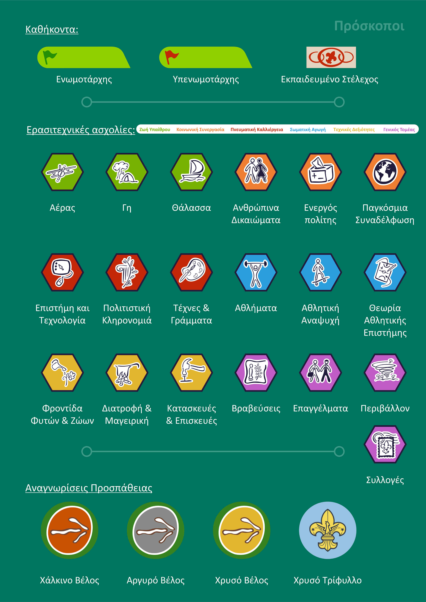
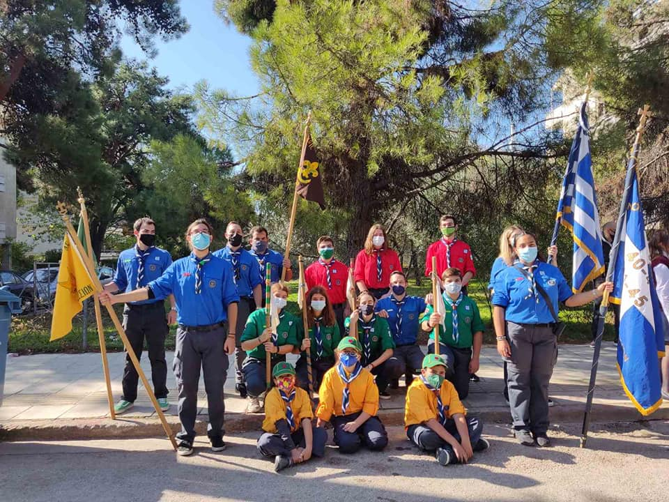

ΟΙ ΠΡΟΣΚΟΠΟΙ ΕΙΝΑΙ ΜΙΑ ΕΘΕΛΟΝΤΙΚΗ ΚΙΝΗΣΗ ΣΕ ΟΛΗ ΤΗΝ ΕΛΛΑΔΑ ΚΙΝΗΤΟΠΟΙΟΎΝΤΑΙ ΣΤΑ ΒΡΙΛΗΣΣΙΑ ΑΠΟ ΤΟ 1960 ΚΑΙ ΒΟΗΘΟΎΝ ΚΑΘΕ ΑΝΘΡΟΠΟ ΣΕ ΚΑΘΕ ΠΕΡΙΣΤΑΣΗ ΣΤΟΥΣ ΠΡΟΣΚΟΠΟΥΣ ΔΕΝ ΚΑΝΟΥΜΕ ΑΥΤΟ ΠΟΥ ΝΟΜΙΖΟΥΝ Η ΠΕΡΙΣΣΟΤΕΡΗ ΜΑΘΑΙΝΟΥΜΕ ΠΡΟΣΤΑΣΙΑ ΚΑΙ ΑΜΥΝΑ ΤΩΝ ΕΑΥΤΟΝ ΜΑΣ ΚΑΙ ΤΟΥ ΠΕΡΙΒΆΛΛΟΝΤΟΣ ΧΩΡΙΖΌΜΑΣΤΕ ΣΕ 4ης ΟΜΑΔΕΣ ΤΙΣ ΛΕΓΟΜΕΝΕΣ ΕΝΩΜΟΤΙΕΣ Π.Χ ΣΤΑ ΒΡΙΛΗΣΣΙΑ ΕΙΝΑΙ ΟΙ AETOI ΟΙ ΑΛΕΠΟΥΔΕΣ ΟΙ ΑΡΚΟΥΔΕΣ ΚΑΙ ΟΙ ΑΡΟΥΡΑΊΟΙ ΕΙΜΑΣΤΕ ΦΙΛΟΙ ΚΑΙ ΑΔΕΡΦΙΑ ΜΕ ΚΑΘΕ ΠΡΟΣΚΟΠΟ ΕΧΟΥΜΕ ΕΠΙΣΗΣ ΒΑΘΜΟΦΟΡΟΥΣ ΕΝΗΛΙΚΕΣ ΠΟΥ ΜΑΣ ΒΟΗΘΑΝΕ ΣΤΗΝ ΠΟΡΕΙΑ ΜΑΣ ΣΤΗΝ ΠΡΟΣΚΟΠΙΚΗ ΜΑΣ ΖΩΗ ΠΕΡΝΟΥΜΕ ΣΗΜΑΤΑ ΓΙΑ ΚΑΘΕ ΚΑΛΗ ΠΡΑΞΗ ΠΟΥ ΚΑΝΟΥΜΕ ΠΧ ΕΓΩ ΕΧΩ ΠΑΡΕΙ ΓΙΑ ΓΙΑ ΤΗΣ ΦΡΕΓΑΤΕΣ ΤΩΝ ΣΚΥΛΩΝ ΤΩΝ ΕΡΑΝΟ ΑΓΑΠΗΣ ΤΗΝ ΕΥΤΗΧΙΑ ΠΑΠΑΓΙΑΝΟΠΟΥΛΟΥ TO MOTO G.P ΚΑΙ ΤΟΥΣ ΑΞΙΩΜΑΤΙΚΟΥΣ ΤΩΝ ΕΝΟΠΛΩΝ ΔΥΝΑΜΕΩΝ ΜΕ ΔΙΑΦΟΡΕΣ ΕΡΕΥΝΕΣ ΚΑΙ ΕΡΓΑΣΙΕΣ ΠΟΥ ΤΗΣ ΠΑΡΟΥΣΙΑΖΟΥΜΕ ΣΤΟΥΣ ΒΑΘΜΟΦΟΡΟΥΣ ΜΑΣ ΚΑΙ ΤΟΥΣ ΑΛΛΟΥΣ ΠΡΟΣΚΟΠΟΥΣ

